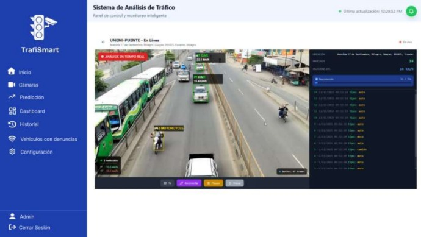
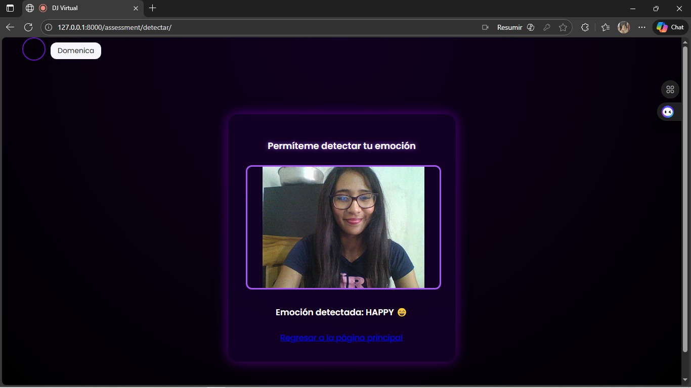
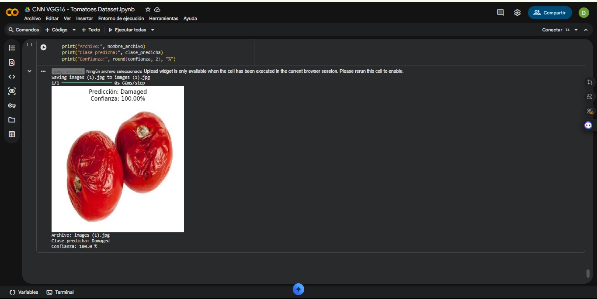

Formación académica
Estudiante de octavo semestre de Ingeniería de Software en la Universidad Estatal de Milagro.
Estudiante de Ingeniería de Software | Desarrollo de soluciones digitales
Estudiante de Ingeniería de Software interesada en el desarrollo de aplicaciones web y móviles, el aprendizaje de nuevas tecnologías y la creación de soluciones digitales funcionales y centradas en las necesidades del usuario.
Soy estudiante de octavo semestre de Ingeniería de Software en la Universidad Estatal de Milagro. Durante mi formación académica he desarrollado proyectos relacionados con el desarrollo de software, aplicaciones web y móviles, bases de datos e inteligencia artificial.
Me interesa seguir fortaleciendo mis conocimientos en desarrollo de software y explorar nuevas tecnologías que permitan crear soluciones útiles, funcionales y fáciles de utilizar. Actualmente continúo desarrollando mis habilidades tanto en el área técnica como en la resolución de problemas y el trabajo en proyectos académicos.
Estudiante de octavo semestre de Ingeniería de Software en la Universidad Estatal de Milagro.

Sistema completo de análisis de tráfico con detección de placas y predicción usando Machine Learning.
Tecnologías: React, TypeScript, Django, Django REST Framework, Python, SQL Server, OpenCV, Machine Learning

Aplicación web desarrollada con Django que utiliza visión por computadora e inteligencia artificial para detectar y clasificar expresiones faciales en tiempo real mediante la cámara web.
Tecnologías: Python, Django, OpenCV, DeepFace, TensorFlow, Keras, HTML5, CSS3, JavaScript, SQLite3

Proyecto de clasificación de imágenes desarrollado con una Red Neuronal Convolucional basada en VGG16. Utiliza Transfer Learning para clasificar imágenes de tomates en diferentes categorías y evaluar el rendimiento del modelo.
Tecnologías: Python, TensorFlow, Keras, VGG16, NumPy, Pandas, Matplotlib, Seaborn, Scikit-learn, Google Colab
Esta sección documenta el sistema visual utilizado en este portafolio.
Primary
#2563eb
Secondary
#0ea5a4
Background
#f8fafc
Surface
#ffffff
Text
#1e293b
Text muted
#64748b
Estudiante de Ingeniería de Software interesada en el desarrollo de aplicaciones web y móviles, inteligencia artificial y nuevas tecnologías.
Información complementaria del portafolio. (muted).
Ver proyectosSmall
Medium
Large
Extra Large
¿Quieres conversar sobre un proyecto o una oportunidad? Escríbeme.
Correo: dpizaa2@unemi.edu.ec
GitHub: domenica-arpi